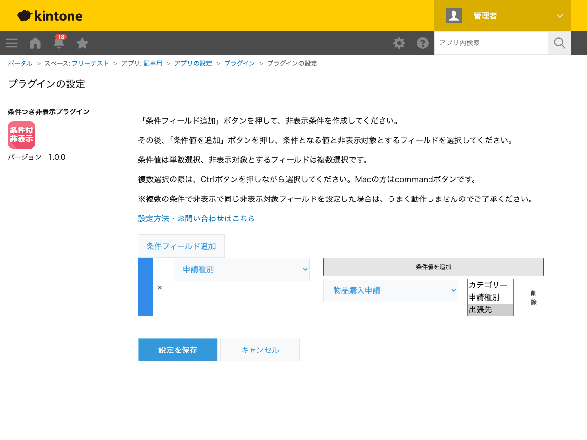
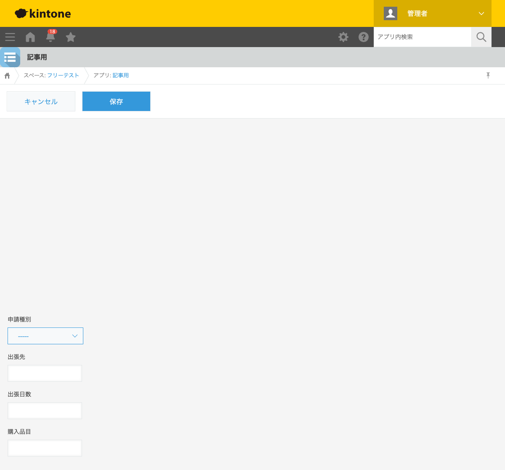
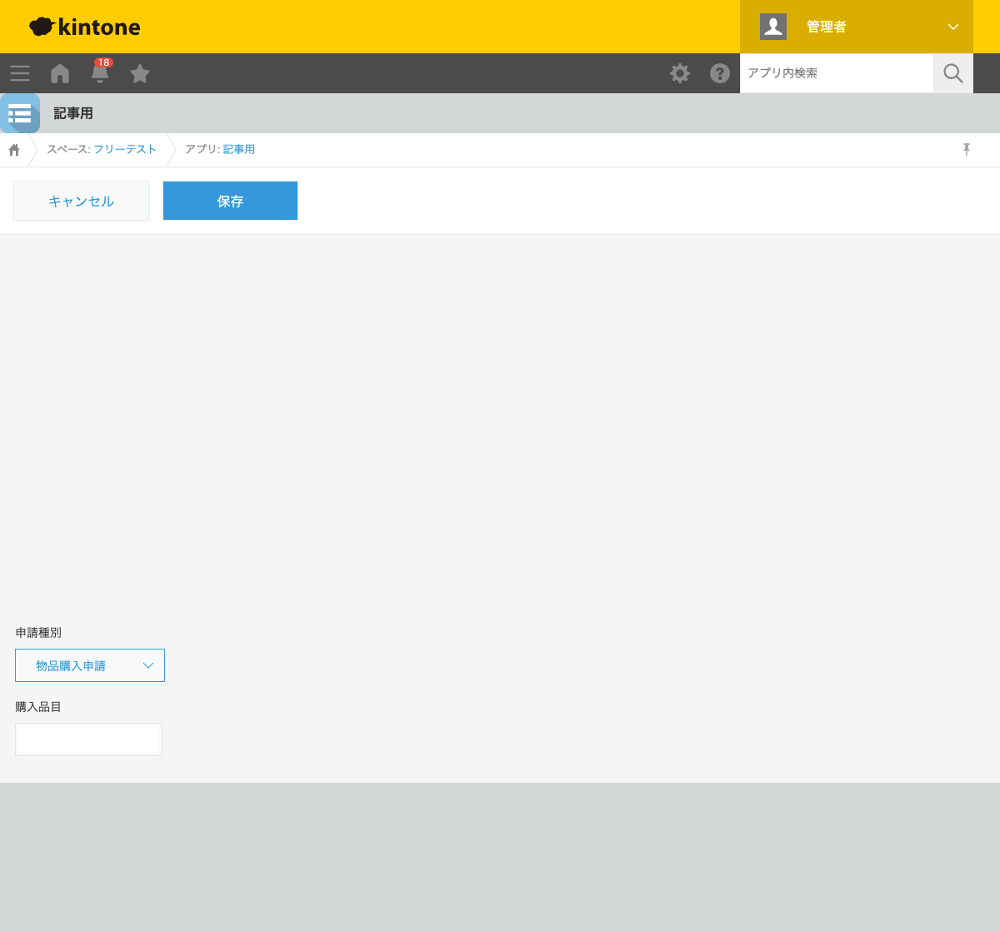

GovAppsプラグイン 安全性を確認できる無料kintoneプラグイン集
「出張申請」と「物品購入申請」を1つのアプリで扱っていると、申請の種類によっては使わない フィールドまで画面に並んでしまい、入力者が迷いやすくなります。この記事では、無料プラグインで ドロップダウン・ラジオボタンの選択値に応じて不要なフィールドを非表示にする方法を、実際の 設定画面と表示結果つきで解説します。
kintoneの標準機能には、条件に応じてフィールドの表示・非表示を切り替える機能はありません。 アプリを申請種別ごとに分けるか、すべてのフィールドを常に表示したまま運用するかのどちらかに なりがちです。JavaScriptカスタマイズを自作すれば、フィールドの値変更イベントを監視して 表示・非表示を切り替えられますが、レコード追加・編集・詳細のそれぞれの画面表示時の初期評価や、 複数条件・複数対象フィールドの組み合わせまで実装するのは手間がかかります。
「条件に応じてフィールドを非表示にする」機能を用意する方法は、大きく4つあります。それぞれの 向き不向きをまとめました。
| 方法 | 向いている場合 | 注意点 |
|---|---|---|
| kintone標準機能のみ(アプリを分ける) | 申請種別ごとに項目の差が大きく、アプリごと分けた方が管理しやすい場合 | アプリが増えるほど横断的な集計・運用が煩雑になる |
| JavaScriptを自作する | 社内に開発者がいて、独自の条件分岐ロジックが必要な場合 | 画面ごとの初期評価・値変更時の再評価の実装・保守が必要 |
| 有料の他社プラグイン | 予算があり、より複雑な条件分岐を求める場合 | 月額課金が発生する。ソースコードが非公開で、外部通信の有無を利用者側で確認しにくいことが多い |
| GovAppsプラグイン(このプラグイン) | 無料で試したい、社内・庁内でセキュリティを確認してから導入したい場合 | 同じ非表示対象フィールドを複数の条件で重複指定すると正しく動作しない |
GovAppsのプラグインはすべて無料・広告なしで、追加課金なしで使い続けられます。 ソースコードはGitHubで全公開しているオープンソースなので、 「本当に外部と通信していないか」を自治体・企業のセキュリティ担当者自身の目で確認できます (このプラグインも個別ページにセキュリティレビュー結果を掲載しています)。
条件つき非表示プラグインは、条件フィールド・条件値・ 非表示対象フィールドを設定するだけで、レコードの追加・編集・詳細画面すべてに反映されます。 今回は「申請種別」(ドロップダウン: 出張申請/物品購入申請)・「出張先」・「出張日数」・ 「購入品目」を持つアプリで設定しました。

レコード追加画面を開いた時点(申請種別が未選択)では、出張先・出張日数・購入品目のすべての フィールドが表示されています。

申請種別を「物品購入申請」に変更すると、設定した条件どおり出張先・出張日数フィールドが その場で非表示になり、購入品目フィールドだけが残ります。入力者は今回の申請に関係ない 項目に惑わされずに済みます。

申請種別を「出張申請」に戻すと、出張先・出張日数フィールドは再び表示されます。詳細画面でも 同じ条件がそのまま反映されます。